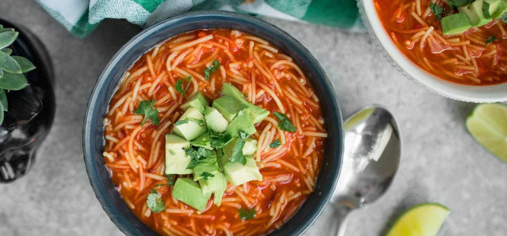

BTS
·
Chicken Noodle Soup (feat. Becky G)
Cher's Noodles Exercise!
HOME
Sopa De Fideo (Mexican Noodle Soup

Ingredients for 1 serving
Soup
1/4 can Tomatoes
2oz Noodles
1/4 Medium White Onion
1/2 clove Garlic
1/2 teaspoon Vegetable Bouillon Cubes
1/8 teaspoon Salt
1 tablespoon Vegetable Oil
1 1/4 cups Water, boiled
Garnish
1/2 Lime, cut into wedges
1/2 handful Fresh Cilantro, finely chopped
1/2 Avocado, ripe, diced
Preparation Time:
20 minutes
Instructions:
Chop the white onion roughly and blend with tomato and garlic until it turns into a smooth puree. Set aside.
Heat the oil in a pot, add the fideo noodles and stir until they turn golden brown.
Add the tomato puree to the pot, mix well with the crispy brown noodles and cook for 1 minute. Stir in hot water and bring to a boil. Cover the lid and reduce to medium-low heat. Simmer for 8-10 minutes until the noodles are tender, stirring occasionally.
Season with salt and bouillon to taste.
Serve warm in a bowl, garnish with coriander and diced avocado on top and serve the soup with lime wedges.
Alphabetical Order of Recipes
Beef & Onion Soy Sauce Noodles
Homemade Chicken and Noodles
Lemongrass Chicken with Yakisoba Noodles
Sopa De Fideo (Mexican Noodle Soup
Ingredient-Specific Recipes:
Need recipes with specific ingredients? Check these out!
Chicken
Onion